La Légende de Siegfried d'après la Chanson de Seyfried à la peau de corne
LA LÉGENDE DE SIEGFRIED D'APRÈS
LA CHANSON DE SEYFRIED A LA PEAU DE CORNE Das Lied vom Hürnen Seyfrid
traduit du moyen haut allemand et du norvégien médiéval par CLAUDE LECOUTEUX
revu le 13 novembre 2002, avec une note liminaire sur le copyright du texte de traduction de M. Claude Lecouteux. Plan : Introduction - I. Les légendes dorées : la légende de Sifrit [ Sifrit l'Encorné - poèmes du cycle légendaire des Goths ] - II.
la légende des Nibelungen dans la vallée du Rhin [Nibelungenlied - Siegfriedlied - préface du Livre des Héros] - III. la Mythologie germanique de Jakob Grimm - notes sur les extraits de Jakob Grimm - IV. le texte [§1 - §179] - notes du texte - Note liminaire :
cette section a été mise en place en juin 2002. Le 12 novembre 2002, j'ai reçu un Email de M. Claude Lecouteux qui s'étonnait de ce que son texte - la traduction de Das Lied vom Hürnen Seyfrid
- soit ainsi mis en avant alors qu'il est protégé par un copyright. Chose que j'ignorais au moment où je me suis attaqué au commentaire de ce texte, d'une richesse symbolique assez exceptionnelle. J'ai donc répondu à M. Lecouteux en lui présentant mes excuses et en lui demandant s'il acceptait - pourvu que cela soit clairement indiqué - que sa traduction reste sur cette page. Je remercie vivement M. Lecouteux qui a eu la gentillesse de répondre favorablement à ma requête ce qui permet à mes notes de conserver - du moins je l'espère - leur intérêt. Note mise en place le 13 novembre 2002 . ¯ Préambule
: Cédant à l'aimable insistance de mon ami Alain Mauranne, je me suis risqué à un exercice un peu périlleux consistant à tâcher de dégager des idées d'alchimie et d'hermétisme à partir d'un texte qui, a priori, n'en évoque point, du moins pour quelqu'un qui ne connaît pas la cabale hermétique. De fil en aiguille, j'ai développé des notes sur ce sujet épineux et j'ai pu assez heureusement compléter ce texte que le lecteur verra ici. Je dois donc remercier une nouvelle fois M. Mauranne qui a mis à ma disposition, sans compter ses efforts, sa grande bibliothèque et ses intuitions bienvenues sur notre sujet. La matière même du texte est tirée d'un recueil qui s'appelle la Légende de Seyfried [Siegfried] à la peau de corne : Das Lied vom Hürnen Seyfrid .
- La traduction est due à M. Claude Lecouteux. Nous avons été amenés à commenter certaines de ses notes et à y déceler, parfois, des tournures hermétiques.
- Les illustrations ont été tirées du site
http://www.nibelungenlied.com/HS/HSew00.html
. Les autres illustrations sont référencées dans le corps de l'article.
- La musique d'introduction a été enregistrée sur Noteworthy composer .
- L'introduction a été rédigée à partir de textes émanant de la bnf [serveur Gallica]. - Le texte sur la Mythologie Germanique
a été extrait de l'une de nos revues de l' Avant-Scène Opéra .
- Les notes qui suivent le texte sont originales. Introduction
Si l'on connaît Siegfried grâce au Ring de Richard Wagner, l'oeuvre- pour totale qu'elle soit ou qu'elle fut considérée telle par le musicien - ne donne qu'une vision partielle de la geste du héros. Le lecteur lira, à cet égard, quelques textes tirés des ouvrages de la bnf [serveur Gallica] qui aideront à son édification. Tous les témoins médiévaux ont été traduits en français, sauf deux qui le sont ici pour la première fois : le Seyfried à la Peau de Corne (XIV e siècle) et l'histoire de Siegfried/Sigurd telle que la rapporte la Thidrekssaga (XIII e siècle). Alors que la Chanson des Nibelungen
occulte largement le fond mythique, ces textes nous permettent de lever un coin du voile et d'apercevoir ce qui se cache notamment derrière le trésor des Nibelungen et l'enfance de Siegfried. En outre se révèle en filigrane tout un univers mental où le merveilleux et le mythe relevaient des réalités d'un monde que fréquentaient encore les êtres surnaturels. Handschrift C (
Hohenems-Laßbergische Handschrift um 1230 )
Le texte de la Légende de Seyfried a été publié par N. von Georg Wachter, Nürnberg, et date de 1540. Il a été repris par Paul Piper dans Die Nibelungen
. Bd.1, DNL, Berlin/Stuttgart 1889, S.143-166. L'interprétation alchimique que nous en donnons est originale ; il s'agit d'ailleurs plus, à proprement parler, d'une interprétation hermétique qu'alchimique. En effet, on trouve dans les 179 paragraphes de ce texte des scènes qui permettent, par l'allégorie ou la parabole, de revenir sur des points de doctrine que nous avons esquissés, complétés ou achevés dans d'autres sections. Mais il évidemment vain de vouloir en tirer des substances chimiques : ce texte, de toute évidence, ne ressortit ni de l'alchimie, ni même de l'hermétisme. Ce n'est pas la première fois, cependant, que l'on baserait des supputations hermétiques tirées d'un « pré-texte », base d'une improvisation sur l'hermétisme et de variations allégoriques sur l'Art sacré. Un point, toutefois, permet de rattacher le texte et ses images, fort belles, à nos supputations cabalistiques : le recours à certains éléments de mythologie qui transcendent, en effet, et le temps et les lieux. Mais si l'on veut pousser jusqu'à son terme la signifiance du texte envisagé dans son rapport à l'Art sacré, il apparaît clairement que le cuivre et le fer sont nommés, sous les espèces de sulfure, de sulfate et peut-être même, de carbonates. Le combat de Seyfried contre le Géant Kuperen [ Kuperan
] tient de l'équilibre instable d'une solution où des sels métalliques sont plus ou moins concentrés et en des déplacements incessants où un métal en précipite un autre. La suite, où Seyfried combat le dragon, est une lutte sans merci contre les esprits de la dissolution et de la putréfaction, lutte dont le prix - qui n'est pas à dédaigner - est la conjonction des Principes de l'oeuvre. Ce combat sans merci se déroule dans la montagne du dragon où l'on reconnaît immédiatement l'athanor des alchimistes. D'ailleurs les héros de ce drame pénètrent par le cendrier de l'athanor au moyen d'une clef qui pourrait bien être du bleu de montagne. Le dragon est finalement vaincu par Seyfried en un passage qui rappelle beaucoup l'un de ceux où les grands Adeptes, comme Basile Valentin, conseillent de «
brûler le laiton et de déchirer les livres
». La suite nous conduit dans les terres de Worms où nous pensons reconnaître l'antique Rhodes. Des considérations hermétiques découlant de l'étude de la Clef de la Plus grande Sapience
, attribuée par Chevreul à Artephius, nous conduisent ensuite à distinguer dans les meurtriers de Seyfried, des principes composés sur lesquels nous ne pouvons nous étendre dans cette introduction.
Au total, la Légende de Seyfried dresse des scènes permettant de situer l'intrigue alchimique vers le tout début de la Grande Coction ; celle-ci s'étend à peu près jusqu'au régime de Mars ainsi qu'à la volatilisation presque complète du Mercure, par la voie sèche. Les vitriols y jouent un rôle de premier plan, en particulier le bleu et le vert. Les sulfures dissous, par le biais des gnomes, jouent aussi un rôle important. On doit enfin distinguer des associations avec les nains qui ont le même emploi que le soufre cristallisé. Pour mieux situer tous ces états, ces processus, on peut conseiller au lecteur de consulter le Bergbüchlein [
la génération des minéraux et des métaux
], les traités de philosophie naturelle [ 1 , 2 , 3 , 4 , 5 ] et enfin, les Mémoires
sur le métamorphisme des roches de Gabriel-Auguste Daubrée et d'Achille Delesse . Cf. aussi notre Mercure de nature . Les légendes dorées 1)- la légende de Sifrit
Il était intéressant de voir en quoi la Chanson de Seyfried à la peau de corne pouvait se rattacher à l'hermétisme par le biais de la mythologie, et, partant, comment l'on pouvait trouver des points d'ancrage permettant d'y débusquer des traits de cabale. Nous avons consulté
La littérature allemande au Moyen âge et les origines de l'épopée germanique par Adolphe Bossert [ Hachette, 1893
] et relevé plusieurs passages que nous soumettons au lecteur. LA LÉGENDE DE SIFRIT
Caractère de Sifrit. Ses premières aventures ; la conquête du trésor des Nibelungen. — Éléments mythiques de la légende de Sifrit. L'héroïne Scandinave Sigurdrifa et la Belle au Bois dormant - Le poème de Sifrit corné. Passage du mythe au chant héroïque, et du chant héroïque au conte populaire.
On a pu suivre, dans les recherches précédentes, le développement de la poésie héroïque des Germains. Nous avons étudié d'abord, dans les deux chanteurs Volker et Horant, le caractère même de cette poésie, véritable poésie anonyme, conçue en vue du charme momentané qu'elle exerçait et en dehors de toute préoccupation littéraire. Nous avons considéré ensuite deux simples épisodes, le combat de Hildebrant et de Hadebrant, et le récit de la mort des fils d'Attila, appartenant tous les deux à l'histoire légendaire des Goths. Dans Walther et Hildegonde, on a déjà pu remarquer une action plus compliquée et touchant aux destinées de plusieurs nations. Nous arrivons enfin au poème des Nibelungen, auquel ces ouvrages de moindre étendue pourraient presque servir d'introduction, et où les traditions
des principales tribus germaniques se mêlent et se combinent en une seule série d'aventures. En adoptant cet ordre, nous n'avons fait que reproduire le mouvement même de l'épopée nationale, qui chante d'abord des faits isolés; qui relie ensuite ces faits, en les groupant autour d'un grand nom ou d'un grand événement, et forme ainsi des cycles épiques; qui réunit enfin plusieurs cycles, en les subordonnant à une idée générale, et crée des poèmes complexes, peintures vives et variées de tout un monde héroïque. Nous retrouverons dans les Nibelungen presque tous les héros que nous connaissons déjà; toute l'Allemagne barbare se donne rendez-vous dans ce
poème. Voici d'abord, en commençant par le midi, le groupe des Goths, avec Théodoric et son compagnon Hildebrant; ensuite, en nous dirigeant vers le nord, les rois burgondes avec leur vassal Hagen [ 175
], établis sur le Rhin supérieur. Enfin, si nous descendons le Rhin, nous rencontrons un peuple nouveau, à qui appartient le héros principal des Nibelungen : ce sont les Francs. Le territoire qu'ils occupent est appelé le Niderlant, ou les Pays-Bas; leur capitale est Santen, sur le Rhin. Santen, Worms [ 171 ], Vérone [ 15
], voilà les trois points extrêmes du cercle qui enferme l'action des Nibelungen et dont tous les rayons convergent vers le centre de ce monde fabuleux, vers Etzelbourg où règne Attila. L'étude du caractère de Sifrit nous montrera la
poésie héroïque des Germains sous un nouvel aspect. Jusqu'ici, nous avons surtout connu cette poésie dans ses rapports avec l'histoire : nous allons la considérer dans ses rapports avec la légende mythique. Qu'un héros se meuve dans un ordre d'idées et de sentiments ordinaires, la tradition poétique lui prêtera des aventures peu surprenantes; elle lui laissera quelque apparence d'un personnage historique. Mais elle ornera de ses fictions les plus grandioses l'image d'un héros en qui elle voudra personnifier les côtés les plus élevés de la nature humaine. Alors elle puisera dans le mythe; elle renouvellera d'anciennes légendes dont le sens religieux s'est perdu, mais qui ont gardé un reflet idéal ; elle transportera sur la terre ce qui reste de l'antique Olympe [
c'est bien sûr là qu'il nous faut chercher, et qu'on trouve d'ailleurs les points d'ancrage entre la mythologie germanique et la vieille mythologie grecque ; partant, c'est là que l'on retrouve le fonds de commerce hermétique pour ainsi dire ; cf. infra la Mythologie Germanique de Jakob Grimm
]; elle créera, enfin, des personnages comme Sifrit, dont la courte et glorieuse carrière se pare d'un rayon surnaturel, et qui traverse le monde héroïque avec la noble assurance d'un demi-dieu. [
Sifrit présente des traits qui le rendent évidemment congénères d'Ajax, d'Arès et pour des raisons qui tiennent à sa quasi-invulnérabilité, à Achille
] Sifrit est la plus haute expression de la vaillance héroïque. Le fond de son caractère est l'enthousiasme. Il cherche la lutte pour elle-même ; il ne pense pas à la victoire, tant il est accoutumé à vaincre. Son seul regret, dans le combat, c'est que le combat finisse. Il se jette dans les aventures, poussé par l'unique besoin d'exercer la vigueur de son bras, et il semble que le monde ne puisse pas lui fournir assez d'occasions de se signaler. Quand il a renversé un géant, il le relève, lui rend ses armes, et le renverse encore [ 82
]. C'est bien ici, on le voit, que le mythe doit reparaître. Il faut que les esprits de la terre et
du ciel renaissent à la vie, sous quelque forme que ce soit, pour que le jeune et brillant héros trouva des adversaires dignes de lui. Sifrit a les défauts de ses qualités, mais ces défauts ne diminuent pas son prestige. Il est présomptueux, dédaigneux, imprudent. Il se plait à éblouir de l'éclat de sa gloire les chevaliers qui lui sont inférieurs en vaillance. Les rois qu'il a servis sont jaloux de sa renommée [
ils sont surtout inquiets de la perte de leurs terres que le roi Gybich veut donner à Sifrit pour le récompenser d'avoir sauvé sa fille Krimhildt
]. Mais il ne voit pas le danger. Un nain (il est vrai que c'était un nain) lui a prédit [ 161
], lorsqu'il était tout jeune encore, que son audace le conduirait à une mort prématurée [
et voilà encore ce qui le rapproche d'Achille
] : il n'en poursuit pas moins le cours de ses périlleux exploits. Il meurt dès la première partie des Nibelungen; mais son esprit remplit tout le poème, et son souvenir détermine jusqu'à la fin les événements. Sifrit s'annonce d'abord comme un héros d'un éclat particulier. Voici l'histoire de ses premières années, d'après la deuxième Aventure :
Dans le Niderlant grandissait le fils d'un roi puissant, — son père se nommait Sigemunt, sa mère Sigelint, — dans un château très fort et connu au loin, situé près du Rhin; ce château s'appelait Santon. Le vaillant guerrier se nommait Sifrit. Il visita maint royaume, grâce à son indomptable énergie, et la vigueur de son bras le conduisit dans les pays lointains. Que de bons guerriers il rencontra plus tard chez les Burgondes. Mais, dès son premier temps, dès les jours de sa jeunesse, on pourrait raconter de lui des merveilles. Il était beau de corps, et de noble apparence; et plus tard il se fit aimer des dames. On l'éleva avec le soin qui convenait à sa naissance; mais il tira ses meilleures qualités de son propre cœur. Le royaume de son père fut illustré par lui, tant il se montra accompli en toutes choses. Déjà il avait atteint l'âge d'aller à la cour. Chacun aimait à l'y voir; les dames et les jeunes filles auraient souhaité de l'y voir toujours. Plusieurs d'entre elles lui voulaient du bien, et le jeune seigneur s'en apercevait. Une escorte l'accompagnait, quand il chevauchait autour du château. Il était vêtu de belles étoffes, par les soins de Sigemunt et de Sigolint. De sages maîtres l'instruisaient, l'élevaient dans les bonnes mœurs. Il se préparait ainsi à devenir puissant et riche. Lorsqu'il fut d'âge à porter les armes, on lui donna un équipement complet. Alors il songea aussi à rechercher les dames, qui, de leur côté, s'honoraient de lui plaire. Et voilà que Sigemunt fit savoir à ses vassaux qu'il donnait une grande fête. La nouvelle en fut portée dans les royaumes voisins. Le roi promettait à chaque invité, homme du pays ou étranger, un vêtement et un coursier. Savait-on quelque part un noble jeune homme qui, selon la loi de son rang, devait être fait chevalier, on l'invitait a la fête. Et tous prirent ensuite l'épée avec le jeune roi. On pourrait dire merveilles de cette fête. Sigemunt et Sigelint furent comblés d'éloges pour leur générosité; ils firent de grandes largesses. Aussi on vit arriver chez eux beaucoup de cavaliers étrangers. Quatre cents jeunes guerriers devaient prendre l'habit de chevalier en môme temps que Sifrit. Les jeunes filles étaient infatigables à l'ouvrage; car elles étaient favorables au jeune prince. Et elles enchâssaient les pierres précieuses dans l'or, qu'elles travaillaient en broderie sur les vêtements du jeune héros [...]
Quand la fête est terminée, les seigneurs du Niderlant, frappés de la belle apparence du jeune prince, et témoins de son adresse aux jeux guerriers, veulent être gouvernés par lui. Mais Sifrit s'éloigne; car, dit le poème, il ne se plaisait que
dans les combats. Son premier exploit est la conquête du royaume des Nibelungen. Ce royaume était situé dans une Île du Nord; il était dominé par une forteresse, où
se trouvait un trésor inépuisable, sous la garde d'un géant et d'un nain, l'un et l'autre d'une force prodigieuse. Le poème des Nibelungen ne raconte pas la conquête du trésor; mais il contient une scène qui se passe dans le fabuleux royaume, et qui
est intéressante parce qu'elle fait bien voir le caractère du héros. Sifrit a besoin d'une escorte de mille chevaliers. Il aborde dans son Île ; mais, au lieu de s'annoncer comme roi, il s'arrête, visière baissée, devant le château, et heurte violemment la porte. Le géant s'élance sur lui et, d'un coup de massue, lui brise sa cotte de mailles [ 65
]. Sifrit est en danger de mort, dit le poème, mais il est heureux de ce que le gardien fasse si bien son devoir. Il se relève, dompte le géant et l'enchaîne. Mais son envie de batailler n'est pas encore satisfaite. «
A travers la montagne, le nain sauvage, le vaillant Albrich, entendit le bruit du combat. Il s'arma aussitôt et accourut au lieu où il trouva le noble étranger qui venait de lier le géant. Albrich était très brave et très fort. Il portait heaume et cotte de mailles, et, dans sa main, un fouet pesant. Il courut en hâte à la rencontre de Sifrit. Sept lourdes masses de fer étaient attachées au fouet. II en frappa si rudement le bouclier du héros, qu'il le brisa presque entièrement. Le bel étranger craignit pour sa vie. Sifrit jeta son bouclier brisé; il remit sa longue épée au fourreau. Il ne voulait point tuer son caroérier : il se faisait un devoir d'épargner ses hommes. » [ 73 ]
Après avoir garrotté Albrich, il se fait enfin connaître. «
Comment vous nomme-t-on ? » demande le nain. — «
Je m'appelle Sifrit, je pensais être connu de vous . » — «
Je suis heureux de l'apprendre, dit Albrich ; je viens d'éprouver que c'est à bon droit qu'on vous regarde comme le roi de ce pays. » [ 46 ]
Ce royaume où Sifrit possède un riche trésor, et où il commande à une chevalerie d'élite a été conquis par lui sur deux rois qui s'appelaient les Nibelungün. La même désignation s'applique au trésor (Nibelungenhort), elle passe ensuite aux possesseurs du trésor : voilà pourquoi les Francs et les Burgondes portent souvent le nom de Nibelungen. Le pays s'appelle le Nibelungentant, ou le pays des Ténèbres : car tel est le sens du mot. Héros de lumière, vainqueur des ténèbres, tel Sifrit apparaît
dans une série de légendes, originairement mythiques, qui se reportèrent sur lui comme sur le plus brillant représentant de l'âge héroïque. La tradition populaire n'invente rien d'une manière absolue; mais aussi elle n'oublie rien. Quand les mythes pâlissent, elle les fait revivre sous forme de légendes épiques. Avec les débris des dieux, elle complète l'image des héros. Par quelle association d'idées procède-t-elle dans ces opérations mystérieuses ? Comment choisit-elle les héros qu'elle juge
dignes d'être illustrés d'une manière exceptionnelle ? C'est ce qu'il est difficile de dire. Souvent des analogies tout extérieures suffisent. Que Sifrit se signale avant l'âge de chevalerie, par des actions glorieuses, on le comparera au dieu du jour, dont il a la vigueur et l'éclat [
Apollon, épithète du Soufre des alchimistes
]. Que, dans son ardeur belliqueuse, il suscite les obstacles, appelle les occasions de vaincre, on songera au dieu du printemps, lassant la longue résistance de l'hiver [ Arès
]. Il ne faut pas oublier que, dans toute création poétique, il y a une part de fantaisie, et il ne faut pas y appliquer une analyse trop rigoureuse. Le fait est que Sifrit fut le héros privilégié de la légende germanique et que le tableau de ses aventures s'embellit de tous les symboles de jeunesse, de vie et de lumière qui restaient des anciens mythes. On trouve dans toutes les mythologies un ensemble de récits qui représentent sous forme symbolique la lutte du jour et de la nuit, du printemps et de l'hiver. Les alternatives de lumière et d'obscurité, le sol tour à tour fécond et stérile, telles furent les premières images qui frappèrent les regards des hommes. [
tous les ouvrages traitant plus particulièrement de philosophie hermétique sont à consulter : la Philosophie Naturelle des Métaux , la Révélation des Teintures des Métaux ; la Philosophie Naturelle Restituée ; La Nature à découvert , etc.
] Quel spectacle plus grand, en effet, pouvait s'offrir à une race jeune, ayant encore la vive sensation des choses extérieures ? Le premier rayonnement du matin, le premier éclat de la verdure, c'était, pour ces hommes, l'œuvre même de la création, qui chaque année, chaque jour, se répétait sous leurs yeux. Ne devait-il pas leur sembler, à chaque floraison, à chaque aurore, que la terre sortait encore une fois, toute neuve, des mains qui avaient formé l'univers ? Spectacle d'autant plus beau qu'il était plus éphémère. En effet, la nuit s'étendait; l'hiver venait, morne et stérile. Alors c'étaient les esprits du mal qui chassaient ou enchaînaient les dieux bienfaisants. Parfois la lutte entre la lumière et les ténèbres est symbolisée par le combat d'un héros contre un dragon. D'autres fois une vierge endormie est réveillée, le jour venu, par un dieu. Ces images, familières à l'enfance de toutes les races, se rencontrent aussi parmi les plus anciennes conceptions mythiques des Germains et des Scandinaves; et elles ont passé de là dans la légende héroïque de Sifrit.
Un des mythes les plus hardis que l'imagination des peuples ait conçus, c'est celui de la délivrance de Sigurdrifa par Sigurd,le Sifrit Scandinave. Sigurdrifa, selon le chant de l' Edda
qui porte son nom, était une valkyrie qui, s'étant attiré la colère d'Odin,
avait été endormie par lui dans un château entouré de flammes [ comparable à Beja, protégée par l' Entrée Ouverte au Palais fermé du Roi
, entrée ceinturée du feu des Sages dont l'impétrant doit apprendre à démonter le mécanisme
]. Au jour marqué par les Nornes, elle devait être réveillée par un guerrier qui ne craindrait aucun obstacle. Sigurd traverse le pays ou la fille d'Odin est captive, et arrive au pied d'une montagne couronnée d'une vive lumière dont les reflets éclairent le ciel. Il s'approche et découvre un château fort, défendu par une enceinte enflammée. Il traversa les flammes, entre dans le château et trouve une femme endormie, couverte de son armure. Il la délivre de son heaume et de sa cotte de mailles. Alors elle se soulève, voit Sigurd devant elle et dit : «
Qui défait ma cotte de mailles ? Qui interrompt mon sommeil ? Qui me débarrasse de ces sombres liens ? » [
cette cotte de mailles magique figure le filet magique où Héphaistos prend au piège Aphrodite et Arès ]
Et, souhaitant la bienvenue au héros, elle s'écrie : «
Salut, ô jour ! Salut, ô vous, les fils du jour ! Salut, ô nuit ! Et toi, terre nourricière, salut ! Regardez-nous avec des yeux bienveillants, et accordez-nous à tous deux la victoire. Salut à vous, dieux et déesses, et à toi, campagne féconde ! Accordez-nous à tous deux, qui sommes de noble race, et la parole et la sagesse, et que nos mains soient pleines de dons salutaires ! »
Nous retrouverons Sigurdrifa dans la poésie héroïque des Germains, non plus comme valkyrie, mais comme simple héroïne. Elle figure dans les Nibelungen, sous le nom de Brünhilt. Elle est invincible pour tout guerrier, excepté pour Sifrit [
elle a donc les caractères de l'Acier des Sages, indestructible, et que le feu même ne peut détruire : c'est l'image de la salamandre. Seul le Soufre des alchimistes peut en venir à bout par une projection en masse, artifice suprême de l'oeuvre
]. Elle garde encore, de ses attributs célestes, une force et une beauté sans égales; mais le mythe primitif est complètement obscurci. Rien ne se perd, en poésie. Quand un mythe disparaît, il reste un conte. Qu'est devenue l'histoire de Sigurdrifa, la fille du ciel, réveillée par le brillant Sigurd ? Le château fort s'est changé en un palais enchanté ; les flammes qui l'environnaient, en une ceinture de ronces et d'épines qui s'élèvent jusqu'au sommet des tours [ ces ronces et épines se voient dans l' écusson central
du vitrail des Jacobins ou encore dans le frontispice du Mutus Liber
]. Sigurd a pris la forme d'un prince jeune et vaillant; et la guerrière elle-même est devenue la Belle au bois dormant . La
légende Scandinave a traversé tout le moyen âge; et, au XVII e
siècle, elle reparaît tout à la fois en Italie dans le Pentaméron
, recueil de contes publiés à Naples, en 1637, par Jean-Baptiste Basile, et en France dans le livre immortel de Perrault. Un conte semblable à celui de Perrault existait en Allemagne; il a été publié par les frères Grimm [ Kinder und Hausmaerchen , 8e édition, 3 vol.; Gœttingue, 1864
.]. N'est-il pas remarquable qu'un sujet poétique se transmette à travers tant de siècles, de manière que les dernières transformations trahissent encore l'idée primitive ? Cette idée perce à travers le récit de Perrault, et sans doute à l'insu de Perrault; mais elle est plus reconnaissable dans le conte allemand de Dorwœschen, qui a gardé plus de simplicité et qui n'a pas ressenti le voisinage de la cour de Louis XIV. Les fées qui dotent la jeune princesse, dans le conte allemand, sont au nombre de douze; c'est la treizième qui lui fait le don fatal. La treizième fée, celle que nous n'avions point priée, c'est le temps qui emporte l'année, la jeunesse et toutes nos joies. Au moment où Dorwœschen s'évanouit, tout s'endort autour d'elle : il n'est pas besoin, comme chez l'auteur français, d'un coup de baguette pour opérer la transformation. Tout ne vit que par elle : elle absente, le sommeil d'hiver cornmence. Le jour où naîtra le printemps nouveau est marqué d'avance, comme dans le mythe Scandinave; et quand le héros prédestiné s'approche, les épines sèches fleurissent et s'écartent pour lui ouvrir un passage. A peine a-t-il touché la main de la jeune fille, que le château s'anime, que les buissons verdissent dans la cour et que les oiseaux volent par la campagne. Nous voilà bien loin de Sifrit; mais nous ne sommes pas sortis du genre d'idées qui accompagne ce héros et que nous allons retrouver encore dans un autre ouvrage.
Prunner Codex - eine Handschrift des Nibelungenliedes
Il existe sur Sifrit un petit poème, bien postérieur aux Nibelungen quant à sa rédaction, puisqu'il n'est connu que par des éditions imprimées du seizième siècle, mais qui, par les traditions qu'il renferme, remonte aux temps héroïques : c'est le Sifrit corné, ou à la peau cornée , ou invulnérable [ Hürnen Seyfried , dans le Livre des héros
de Von der Hagen et Primisser : deuxième partie
.]. Le sujet offre de l'analogie avec celui du Chant de Sigurdrifa. Un dragon a enlevé une jeune fille et la tient captive sur un rocher désert. Lui-même, véritable esprit de ténèbres, habite au fond d'une noire caverne. Il a également réduit sous sa loi les Génies de la terre, les nains qui accumulent les richesses dans des allées souterraines. L'arrivée de Sifrit est le signal d'une délivrance commune, achetée au prix d'un long combat. Cependant le Sifrit corné est loin de ressembler à une œuvre mythique. Le mythe perce, à l'insu du
poète, plus préoccupé de la partie anecdotique du récit. C'est un conte qui a gardé quelque chose du ton héroïque. Le mythe est si bien oublié, que le dragon est à peine un monstre; c'est un chevalier à qui l'on a jeté un sort et qui, après cinq ans révolus, doit reprendre forme humaine [
N'y a-t-il pas là comme une indication ? Le Roi des alchimistes n'est-il pas Chaos, au début de l'oeuvre ; et le Mercure n'est-il pas comparé à un dragon venimeux ? Il faudrait encore réfléchir sur la proximité phonétique entre les mots Cadmos, cosmos et chaos ; cf. Phédon de Platon
]. Il n'est pas cruel ; il traite sa captive avec égards, quoiqu'il n'ait pas le don de lui plaire; et il se promet, le jour venu, de la ramener à ses parents et de la demander en mariage [ 27
]. Ajoutez une fée, et vous aurez un conte de Perrault. S'il était permis de fixer une chronologie dans ces sortes d'ouvrages, ce petit récit serait l'introduction naturelle des Nibelungen. Il retrace les aventures de Sifrit jusqu'à son arrivée à Worms. Ce qu'il offre de plus intéressant, c'est le caractère du héros, quoique sa sauvagerie soit exagérée à plaisir. Sifrit, tout enfant, est si grand et si fort [ c'est aussi en quelque sorte un Hercule
], et en même temps si intraitable, qu'on ne sait comment l'élever. De bonne heure, il veut quitter la maison paternelle et courir les aventures. Le roi assemble ses conseillers. «
Laissez-le partir, disent-ils : l'expérience le corrigera, et, s'il reste en vie, il sera d'autant plus vaillant. » [ 3 ]
Sifrit se met en route. Dans le premier village ou il arrive, il s'engage chez un forgeron [ 4
], qu'il étonne d'abord par sa force prodigieuse. Il donne un coup de marteau : le fer vole en éclats, et l'enclume s'enfonce sous terre. Le maître cherche à se débarrasser d'un si terrible ouvrier. Il l'envoie faire provision de bois dans la forêt [ 6
], sachant qu'il y rencontrera un dragon, et espérant bien qu'il n'en reviendra pas. Mais Sifrit tue le dragon [ 7
], et, s'étant baigné dans le sang du monstre, il devient invulnérable. Sa peau se durcit comme de la corne [ 10
] : de là le nom du héros et celui du poème. [
il s'établit là une relation semblable à celle d'Achille dont la mère - Thétis - le tenait, c'est bien connu, par les chevilles. Le Styx est ici le premier dragon que combat Sifrit. Le terme qu'il convient d'employer pour décrire l'opération est kelainoV
, noir, sombre, mais aussi souillé de sang, en parlant du Styx, des Erynies. On en rapprochera kelainegkhV
: à la lance noire de sang ( épithète d'Arès)
]. Sifrit établit sa demeure dans la forêt et devient un féroce chasseur. Sa vigueur était telle, qu'il prenait les lions vivants et les garrottait [ 33
]. En peu de temps, il a dépeuplé le canton; déjà le gibier lui manque, et ses chasses ne lui rapportent plus rien. Un jour cependant, ses chiens découvrent une trace [ 35
]. Il les suit, sans s'arrêter, pendant quatre jours et quatre nuits [ 36
], et se laisse conduire par eux dans une affreuse solitude. Déjà, ne trouvant rien, il s'apprêtait à revenir, lorsqu'il vit paraître devant lui un nain [ 42
]. Les nains sont toujours très riches, car ils cherchent sous terre les métaux et les diamants. Celui-ci était vêtu d'or et de soie, et une brillante couronne était posée sur sa tête [ 44 ]. «
Qu'est-ce qui vous amène dans cette solitude, seigneur ? »
demanda-t-il. Sifrit avait tellement pris l'habitude de la vie sauvage, que, pour toute réponse, il dit : «
Tu es le premier homme que j'aie rencontré depuis des années : dis-moi quel est mon père, et ma mère. » [ 46 ]
Le nain, ayant satisfait à sa demande, lui apprit aussi que, non loin de là, était le rocher où un dragon tenait prisonnière la fille du roi des Burgondes [ 50
]. Aussitôt Sifrit jura sur son épée de la délivrer. — «
Ce sera un rude combat, dit le nain, et jamais homme n'en a livré un pareil. » — «
Tant mieux ! s'écria Sifrit, je ne me plais que dans les combats à outrance. »
Le récit continue de se développer à la façon d'un conte, plutôt que d'une légende mythique. Il prend même par moments une teinte très chrétienne. La jeune fille, abandonnée sur le rocher, se confie à la sainte Vierge [ 30
]; elle implore la Reine du ciel, dont elle a appris dans les livres, dit-elle, à connaître les perfections. Le sauvage guerrier lui-même invoque le secours de Dieu dans le combat qui va commencer [ 41
]. Un géant tenait les clefs de la demeure du dragon [ 59
]. Sifrit l'appelle. Le géant paraît, armé d'une énorme massue de fer, qui dépasse les arbres de la forêt de la moitié de sa longueur [ 62
]. Son casque, dit le conteur, reluisait, comme le soleil reluit sur les vagues de la mer [ 72
]. Sifrit n'a pas de peine à vaincre le géant [ 82
]; et il faut que celui-ci le dirige par le sentier qui mène au rocher. Dans son ardeur, il s'élance en avant. Alors le géant se jette sur lui par derrière et le renverse [ 87
]. Heureusement, le nain veillait sur le héros; il Iui met aussitôt sur la tête la toque qui rendait invisible [ 89
]. Sifrit, assis au bord du chemin, reprend connaissance : le choc avait été rude. Le nain cherche encore à le détourner de l'entreprise. «
Plutôt perdre la vie, répond-il, que de revenir jamais sur mes pas ! » [ 94 ]
II jette la toque qui le protégeait, attaque le géant et le terrasse une seconde fois [ 97
]. Mais de plus dures épreuves l'attendaient sur le rocher. Le danger était, pour lui, d'être consumé par l'haleine embrasée qui sortait de la bouche du monstre [ 129
]. L'issue du combat renferme une dernière allusion au sens mythique du récit : le dragon entre dans une telle ardeur, que les écailles de son enveloppe se fondent et coulent le long de son corps, comme de la glace liquide [ 147
]. L'ancien symbole se reconnaît ici : Sifrit reparaît comme le héros du printemps, vainqueur de l'hiver [
l'image hermétique est exacte mais il est peu probable que l'auteur ait voulu y joindre une intention alchimique...Quoi qu'il en soit, l'image de cette corne qui est comme de la glace liquide donne tout à fait l'idée de l'aspect pâteux et visqueux que revêt le Mercure
]. Le dragon mort, tout le peuple des nains s'anime [ 154
]; car il les avait tenus longtemps sous le joug. Ils entourent le libérateur, lui font fête dans leurs demeures souterraines, étalent devant lui leurs trésors. Sifrit et la princesse qu'il a sauvée se mettent en route pour Worms [ 156
]. Le nain les accompagne. Tout en cheminant, Sifrit lui dit : «
Mon petit compagnon, révèle-moi les secrets d'un art qu'on appelle Astronomie. Je t'ai vu ce matin, quand nous étions sur le rocher, lire dans les étoiles ce qui devait m'arriver. Dis-moi combien d'années je vivrai uni avec ma jeune fiancée. » [ 160 ] Le nain lui répond : «
Vous la posséderez pendant huit années; ensuite vous mourrez par trahison; mais la dame vengera votre mort, et, à cause de vous, maint chevalier perdra la vie. » — «
Puisque ma mort est si proche, dit Sifrit, et que la vengeance sera si éclatante, cela me suffit : je ne veux pas connaître la main qui me frappera. » [ 163 ]
Ils arrivent ainsi a Worms. Ici le poète finit son récit [
le résumé est incomplet, puisque les fils du roi Gybich - Hagen, Gunther et Gerold - décident de tuer Seyfried, ce qui sera réalisé alors que Seyfried étanche sa soif près d'une fontaine froide
]; il renvoie, pour la suite, à un ouvrage qu'il appelle les Noces de Sifrit
: ce n'était sans doute autre chose qu'un ancien poème qui devint plus tard la première partie des Nibelungen. Que manque-t-il à ce récit ? C'est que le monstre tué par Sifrit redevienne un beau prince et qu'on lui trouve une autre fiancée. Nous aurions alors un conte parfait. Les traditions primitives des peuples prennent successivement trois formes principales : celle du mythe, celle du chant héroïque, celle du conte. Quand la légende mythique cesse d'être un objet de croyance, elle se rattache à la tradition héroïque qui vient après elle. Quand l'esprit héroïque disparaît à son tour, il reste encore le fonds romanesque des récits; et tout le développement finit par des contes. Le poème de Sifrit corné flotte entre le conte et le genre héroïque. Dans le Chant de Sigurdrifa et dans le conte de la Belle ou bois dormant, le même sujet se présente d'abord sous forme héroïque, avec un mélange d'éléments mythiques, et ensuite comme simple récit romanesque. Perrault est le dernier héritier du scalde Scandinave. [...] Das Nibelungenlied - Handschrift C
Sifrid l'Encorné; sa place dans l'ensemble de la légende épique.
La poésie héroïque, ce legs de l'ancienne Germanie, se maintenait encore, grâce aux souvenirs glorieux qu'elle consacrait; il est vrai qu'elle s'altérait, se dénaturait de plus en plus. Elle avait suivi d'âge en âge tous les changements du goût et des mœurs. Chaque siècle y avait mis son empreinte plus ou moins forte, selon la puissance de son génie inventif. La société chevaleresque y avait porté l'esprit d'aventure et de galanterie; la société bourgeoise qui suivit, moins homogène, moins originale au fond, n'y laissa qu'une faible trace. Rien ne distingue les poèmes héroïques du XIV e
siècle de ceux qui les avaient précédés, si ce n'est peut-être un style plus dur, la trivialité de certains détails, et parfois un tour humoristique qui atteste l'incrédulité de l'auteur vis-à-vis de son propre récit. Ce ne sont, pour la plupart, que des remaniements de textes plus anciens, d'utiles copies qui, en l'absence des originaux, peuvent servir à reconstituer l'ensemble d'un cycle légendaire. 1. — SIFRIT L'ENCORNE .
Tel est, par exemple, le genre d'intérêt qui s'attache à Sifrid l'Encorné, [ Hürnen Seyfried , dans le livre des Héros
de Von der Hagen et Primisser, deuxième partie - nouvelle édition, par Golther, Halle, 1899
] ou l'invulnérable, un petit poème qui nous a été conservé dans des éditions imprimées du XVI e
siècle, mais qui a dû être écrit longtemps auparavant. Dans les Nibelungen, Sifrit obtient la main de Krimhilt par les services chevaleresques qu'il rend au roi Gunther. D'après une autre tradition, qui remonte jusqu'aux temps païens, Krimhilt est la récompense d'une victoire que Sifrit a remportée sur un dragon. Le dragon, symbole mythique, représente la nuit qui enveloppe la terre de ses replis sombres, l'hiver qui tient la nature captive et la frappe de stérilité, en un mot, tout ce qui, dans l'univers visible, répond à l'idée du mal [
il y a là évidemment toute une symbolique complexe que l'on s'est attaché à analyser au long des pages de ce site. Voyez en recherche
sur le dragon. Que l'on se rappelle simplement ici que le dragon tient du signe du Capricorne et de celui du Cancer, cf. zodiaque alchimique .
]. Sifrit est le dieu bienfaisant qui s'annonce dans les premiers rayons de l'aurore, et qui donne la fécondité à chaque printemps nouveau. Il est remarquable que la vieille légende, consignée dans les Eddas
, inconnue dans les Nibelungen, reparaisse tout à coup dans une sorte de conte rimé au déclin du Moyen Âge. Il est vrai que le symbole qu'elle renfermait à l'origine est bien obscurci. Le dragon est devenu un chevalier, à qui une fée maligne a jeté un sort, et qui, après un délai fixé, doit reprendre forme humaine. Il tient Krimhilt enfermée au fond d'une caverne, tout en la traitant avec les égards dus à une châtelaine prisonnière [ 26
]. Le vainqueur la ramène à Worms, et l'auteur inconnu renvoie, pour la suite, à un ouvrage qu'il appelle les Noces de Sifrit
, et qui formait sans doute la première partie des Nibelungen. La plupart des petits poèmes qui, comme Sifrit l'Encorné
, se rangent autour de la grande épopée, mériteraient à peine d'être cités, si l'on ne tenait compte que de leur valeur littéraire. Ils tirent leur intérêt des sujets qu'ils nous ont conservés; ils montrent la tradition épique dans sa complexité féconde, se développant en plusieurs séries de fictions parallèles et souvent contradictoires. 2. — POÈMES DU CYCLE LEGENDAIRE DES GOTHS .
Le héros qui, à côté de Sifrit, semble avoir été le plus populaire dans la dernière période du Moyen Âge, c'est le roi des Goths Théodoric, appelé Théodoric de Vérone (Dietrich von Bern) [ 15
], en souvenir de la victoire qu'il remporta sur Odoacre devant les murs de cette ville. Cette victoire ne suffit pas pour lui assurer la possession de l'Italie, et il fut tenu en échec jusqu'au jour où les renforts qu'il reçut des Visigoths lui permirent de reprendre l'offensive. Le poème de la Bataille de Ravenne, de la fin du XIII e
siècle, retrace ses revers passagers et son triomphe définitif. Mais il est évident qu'au point de vue de la légende, le secours dont il a besoin ne peut lui être donné que par Attila, l'arbitre souverain du monde héroïque, quoique, d'après l'histoire, Attila fût mort depuis une quarantaine d'années à l'époque de la prise de Ravenne par Théodoric. Par un autre anachronisme, Sifrit,
l'ancien héros mythique, figure parmi les ennemis du roi des Goths; il est même vaincu par lui en combat singulier [
Ce que le poème offre de plus intéressant, c'est un épisode, où est racontée la mort des deux fils d'Attila, qui ont voulu accompagner l'expédition. Un éditeur moderne a essayé de le séparer de l'ensemble : Ettmilller ]. le dragon babylonien
2)- la légende des Nibelungen dans la vallée du Rhin [
extrait de les Annales de l'Est, publiées sous la direction de la Faculté de Lettres de Nancy, 1888, deuxième année ] - H. Lichtenberger
Dans la tradition du Nord, comme dans la tradition allemande, la vallée du Rhin est le théâtre des événements que raconte la légende des Nibelungen. C'est dans le Rhin qu'est englouti le trésor des Nibelungen ; c'est à Worms que régnait au V e
siècle le roi Gundicarius ; c'est près du Rhin que la légende plaçait le royaume de Siegfried, et ce sont probablement les Francs qui ont les premiers célébré ce héros et chanté les exploits et la mort glorieuse des rois burgondes et de leurs compagnons. Du V e au IX e
siècle, la légende se répand dans toute l'Allemagne et pénètre jusqu'en Norvège et en Islande. Puis le chant épique s'éteint peu à peu ; les lieder disparaissent sans avoir été fixés par écrit ; les jongleurs laissent de côté les anciennes légendes pour se lancer dans la politique du jour et composer des poésies de circonstance. Otfried de Wissembourg, qui vivait à la fin du IX e
siècle, n'entendait plus de lieder historiques célébrant les exploits des anciens héros, mais des chansons grossières, probablement satiriques ou érotiques ; aussi écrivait-il à l'évêque Lintbert : «
Lingua...haec (theotisca) velut agrestis habetur, dum a propriis nec scriptura nec arte aligna ullis est temporibus expolita ; quippe qui nec historias suoruin antecessorum, ut multae, gentes, commendant memoriae, nec eorum geslo, vel vitam ornant dignitatis amore. »
Cependant, après deux siècles de silence et d'oubli, il se produit comme une renaissance de l'épopée nationale : le vieux tronc presque mort de la légende se remet à fleurir, et dans toute l'Allemagne on recommence à chanter les anciens héros : cette renaissance de la poésie épique allemande, suscitée par le brillant développement que prennent, vers le XI e et le XII e
siècle, les chansons de gestes françaises, a probablement commencé dans la vallée du Rhin. C'est de là qu'ont dû partir les premiers lieder qui ont de nouveau chanté Siegfried et les Nibelungen. Ces lieder ont disparu, n'ont peut-être jamais été fixés par écrit, mais il est probable que depuis cette époque la légende des Nibelungen est restée populaire dans la vallée du Rhin. Au XIII e
siècle le Nibelungenlied est traduit en néerlandais ; du XIII e au XV e siècle, le poème du Jardin des roses
, composé probablement en Autriche, paraît avoir eu plus de succès à Worms que dans sa première patrie ;à cette même époque, le Siegfriedslied
est également connu sur les bords du Rhin. Au XV e
siècle encore on raconte l'histoire de Siegfried et la légende des Nibelungen continue à se transformer dans ces contrées. Ce sont ces dernières modifications que nous voudrions étudier. Le manuscrit m du Nibelungenlied et la Préface du livre des héros
n'ont pas grand intérêt par eux-mêmes, mais on peut, en les comparant aux sources qu'ils suivent, se rendre compte d'une manière précise de la façon dont une légende s'altère avec le temps et des expédients auxquels les poètes ou les compilateurs ont recours quand ils n'ont plus qu'un souvenir vague et confus de la légende, ou quand ils se trouvent en présence de plusieurs versions différentes d'un même fait [ Voir sur ce sujet W. Grimm, Heldensage
, n° 134. Barlsch, Introduction de sa grande édition de la Nibelunge Not. Weigand
, Zeitschrift für deutsches Alterthum, X, 142-146. ]. Le XV e
siècle est en France l'époque des romans en prose : on délaye en prose les chansons de gestes déjà tant délayées en vers : en Allemagne, sur les bords du Rhin, on obéit à une tendance analogue : il existe sur Siegfried un certain nombre de traditions : celle du Nibelungenlied , celle du Siegfriedslied , celle du Jardin des roses
; il s'agit de compiler ces données d'origine diverse, de façon à produire une histoire complète de Siegfried, une biographie où aucun de ses exploits ne soit oublié. Les différentes versions de la légende ne s'accordent pas entre elles : — on passera par-dessus quelques contradictions, — tant pis pour le lecteur s'il ne comprend pas. Les
diverses parties de la légende ont en chacune son existence indépendante et ne peuvent pas se relier les unes aux autres : il faudra coûte que coûte faire un récit suivi et complet, quitte à modifier la légende principale pour conserver un épisode. Des œuvres ainsi composées d'éléments disparates deviennent nécessairement confuses, incohérentes ; elles fourmillent de contradictions; on y trouve plusieurs récits différents d'un même fait les uns à côté des autres; quoi d'étonnant si la
légende ainsi défigurée finit par retomber dans un oubli mérité ? L'auteur du manuscrit m [
la table des matières du msc. m est publiée par Welgand, Zeitschrift für deutsches Alterthum
, X, 142; par Bartsch dans l'introduction de sa grande édition du Nibelungenlied , p. xxv, et par Muth, Einleitung m das Nibelungenlied
, p 115. Le manuscrit m a été écrit au XVe siècle dans la vallée du Rhin, peut-être dans les environs de Mayence ] combine le Nibelungenlied avec le Siegfriedslied
, lequel se compose déjà lui-même de plusieurs lieder juxtaposés ! Comme il ne reste de ce manuscrit que les titres des chapitres, il est difficile de se rendre compte de la manière dont l'auteur éludait ou atténuait les contradictions
qui devaient se produire par suite de cette combinaison. Mais étant données les habitudes des compilateurs, il ne devait guère craindre de les laisser paraître aux auditeurs de s'en tirer comme ils pourront. -1 ère
Aventure : Comment Siferit grandit pour les combats, comment il devint invulnérable et conquit le Trésor des Nebulunge avant d'être chevalier. Dans le premier des lieder dont est composé le Siegfriedslied (str. 1-15) [ Je cite le Siegfriedslied
d'après l'édition de von der Hagen el le Nibelungenlied d'après celle de Lachmann.
], Siegfried est fils de roi et fait le désespoir de ses parents par son indocilité [ 2
]; il est élevé dans la forêt chez un forgeron [ 4
], tue un dragon dans le sang duquel il se baigne, ce qui le rend invulnérable [ 10
]; enfin, il conquiert le trésor de Nybling [ 166
] sans que le poète nous dise comment il s'y est pris, ni ce qu'était au juste ce trésor.
- Les aventures suivantes (2 à 5) correspondent aux 3 premiers lieder du Nibelungenlied
: Siegfried a dû retourner à la maison ; car, au début du Nibelungenlied
, il part de Xanten pour Worms où il veut demander la main de Kriemhilt ; pour s'en rendre digne, il fait pour Gunther la guerre contre les Saxons et après cet exploit aperçoit pour la première fois la belle Kriemhilt à laquelle il offre ses services de chevalier. C'est à cet endroit que l'auteur du manuscrit m intercale le 2° Siegfriedslied . - 6 ème
Aventure : Comment Gunter voulut aller vers Kriemild et comment ils en furent empêchés par un dragon sauvage [ 120 ], p. 27. - 7 ème
Aventure : Comment un dragon sauvage enleva Kriemild et l'entraîna sur un rocher élevé [ 19 ], p. 31. - 8 ème
Aventure: Comment Siferit délivra la jeune fille sur le drachenstein en accomplissant force beaux exploits [ 140 ], p. 39. - 9 ème
Aventure : Siferit après avoir vaincu le dragon regagna le Rhin avec la jeune fille [ 159 ], p. 44. - 10 ème
Aventure : Comment Siferit chevaucha d'Isinstein en Nebulunge lant et y chercha 1000 de ses guerriers, p. 52. A partir de la 10 ème
aventure le manuscrit m suit de nouveau la légende du Nibelungenlied sans plus s'en écarter. Comment s'est opéré le raccord entre le Siegfriedslied et le Nibelungenlied
? Il faut commencer par faire quelques corrections à cette table des matières très défectueuse pour comprendre la suite des aventures de Siegfried : dans la 6 ème
aventure le compilateur a certainement mis Kriemhilt pour Brünhilt (il fait la même faute dans les titres de la 11 ème et de la 12 ème aventure) ; de plus, entre la 9 ème et la 10 ème
aventure, il doit avoir oublié de mentionner un chapitre racontant comment Siegfried et Gunther conquirent Brünhilt ; la 9 ème
aventure a d'ailleurs 8 pages (environ 120 strophes), ce qui est en effet beaucoup pour une seule aventure. Ces corrections une fois faites, le récit devient à peu près compréhensible : au moment où Siegfried et Gunther vont partir pour l'Islande, Kriemhilt est enlevée par un dragon [ 17
]; Siegfried la délivre, rentre à Worms [ 164
], puis, — avant d'épouser Kriemhilt, qu'il a cependant déjà méritée, — part avec Gunther pour Isenstein où ils triomphent de Brünhilt qu'ils ramènent à Worms comme dans le Nibelungenlied . Ce
récit n'en est pas moins confus et peu vraisemblable : on se demande surtout comment l'auteur a pu se tirer de l'histoire du trésor des Nibelungen : elle parait une première fois dans le 1 er Siegfriedslied (1 ère aventure), une seconde fois dans le 2 ème
Siegfriedslied où Siegfried, pendant sa lutte avec le dragon, découvre par hasard le trésor du roi Nybling (8 ème
aventure) ; enfin, d'après la légende sur laquelle repose la 10 ème
aventure, Siegfried enlève le trésor aux rois Schilbunc et Nibelunc, et au nain Albrîch. Le compilateur a-t-il supprimé une ou plusieurs de ces versions de la légende ou a-t-il donné trois récits différents du même fait ? Ces deux hypothèses sont également possibles : quoi qu'il en soit, dans le premier cas, il modifie arbitrairement ses sources ; dans l'autre, son récit devient un imbroglio dont les lecteurs les plus perspicaces ne pourraient pas sortir. La préface du livre des héros [
Manuscrit. Msc. de la bibliothèque du Séminaire de Strasbourg — brûlé en 1870 — écrit vers le milieu du XVe siècle par Diebolt von Hanowe (Voir Wilken,
Geschichteder Heidelberger Büchersammtung
, p. 406 — La préface du livre des héros a été publiée par von der Hagen, Heldenbuch, l, p. cxi.Éditions imprimées : la 1ère à Strasbourg vers 1477 (réimpression de Keller, Bibliothek des litteransichen Vereins in Stuttgard, 1887. — Sur les autres éditions voir Keller,
ibid., p. 704.Le seul manuscrit de la préface du livre des héros, la 1ère, la 3ème et la 4ème éditionappartiennent à l'Alsace, la préface du livre des héros a donc été sinon composée, du moins très connue en Alsace.
] est également le résultat de la combinaison de plusieurs sources. L'auteur qui ne vivait probablement guère avant le milieu du XV e siècle, voulait
donner une sorte d'aperçu général de l'histoire des héros, sous forme d'un catalogue très sec des principaux noms et des principaux faits de la légende héroïque. La légende des Nibelungen figure naturellement dans ce tableau : le récit qu'en donne
le compilateur a été fabriqué au moyen de la version D du Jardin des roses
et de quelques souvenirs vagues du grand massacre des rois burgondes et de leurs compagnons par les Huns, à l'instigation de Kriemhilt. Le compilateur ne raconte pas la légende du Jardin des roses
: il se borne à énumérer, d'après les données de la version D, les combattants qui se disputent les couronnes de roses et les baisers de Kriemhilt. Du côté de Dietrich, nous trouvons Hildebrant, Wolfhait, Sigeslap, Heime, Wittich, Dietleip de Styrie, Rüdiger, le moine llsan, le roi Hartung de Russie, le jeune roi Fruot de Danemark et le beau Dietrich de Russie [
Il se nomme Dietrich de Grèce dans le Jardin des Roses. C'est, du reste, la seule erreur que commet le compilateur.
], Amelolf, père de Wolfhart Alphart, et Sigestap, et le fidèle Eckart. Tous ces personnages appartiennent au cycle de Dietrich : Rudiger seul joue un rôle important dans le Nibelungenlied
, mais le compilateur ne semble plus rien savoir de ses aventures : il se souvient seulement qu'il réside à Bechelaren et s'imagine que le roi Gunther lui donna une de ses filles en mariage, un souvenir confus de l'ancienne légende d'après laquelle Giselher, le frère de Gunther, doit épouser la fille de Rudiger. Si nous passons aux héros qui appartiennent au cycle des Burgondes et de Siegfried, nous trouvons d'abord qu'ils sont répartis entre quatre royaumes, tous situés sur les bords du Rhin et fort difficiles à distinguer les uns des autres : Niderlani, Grippigenlant [ Var Gripdenland Grippean ], la Burgondie [ Var Burgiune Burgun
] et le Nibelugenlant. Grippigenlant (p. CXII, CXV) désigne le pays autour de Cologne et d'Aix : les héros qui y habitent sont : Ludegast, Hug von Mentze (Mayence) et Orttewin von Burine (Bonn), Ecke Vasolt et Obendrolt. Dans le poème d'Ecke, le pays de Gripiar (Agrippian, éd. de Strasbourg), dont la capitale est Cologne, est également la patrie d'Ecke et de Vasolt, deux géants avec lesquels se mesure Dietrich de Bern. Le nom de Gripian, Agrippian vient peut-être de l'ancien nom latin de Cologne, Colonia Agrippina. La Burgondie doit être l'ancien nom du pays situé autour de Worms, où régnait le roi Gibich et où sa fille possédait le fameux Jardin des roses (p. CXII). Jusque-là tout est conforme aux données du Nibelungenlied et du poème du Jardin des roses
. Mais la confusion commence lorsqu'il s'agit de déterminer où est le Niderlant: « Sifrit », nous dit-on, «
était roi du Niderland qui comprenait le pays de Worms (Wurmez) et des environs; ce pays était situé près du pays du roi Gibich; son père s'appelait Sigemund von der Nibelunge » (p. CXXI). Siegfried. A. Kampf
Voilà Gibich et Siegfried, tous les deux rois de Worms [
Cette confusion vient probablement de ce que dans le poème du Jardin des roses Siegfried est appelé « von Niderlant », et réside à Worms.
]. Le compilateur ne nous dit rien sur la position de ce pays de Niederlant ou des Nibelunge qui dans le Nibelungenlied
est situé en Norvège. La confusion devient complète quand le compilateur, s'imaginant peut-être que le nom du pays de Grippean vient du roi Gibich (qu'il appelle Gipi pour les besoins de la cause), fait régner Gibich sur le Grippigenlant, lequel est lui-même identique au Niderlant et comprend les villes de Worms, Mayence, Cologne et Aix (p. CXXI). Le compilateur s'est absolument perdu dans la géographie comparée des poèmes d'Ecke, des Nibelungen et du Jardin des roses
, qu'il ne parvient pas à combiner d'une façon satisfaisante et dans laquelle il finit par s'embrouiller tout à fait. Il est plus clair et plus complet dans l'énumération des héros qui forment la cour du roi Gibich ; il sait de nouveau la version D du Jardin des roses
et n'oublie qu'un seul héros, Rienolt de Milan. Par contre, il se souvient du jeune Giselur qui figure dans la légende des Nibelungen et non dans celle du Jardin des roses
; seulement, comme il ne sait probablement pas grand-chose sur son compte, il se tire d'affaire en le faisant
mourir jeune. Gibich règne à Worms avec ses fils Gunther, Gêrnôt et Giselhêr; Kriemhilt, sa fille, possède à Worms le délicieux Jardin des roses
. Parmi les héros qui défendent l'entrée du jardin contre Dietrich et ses compagnons, nous trouvons d'abord Hagen de Tronje (Drowe Trowe troy), le fidèle vassal des rois burgondes, puis Walther de Kerlingen et Siegfried; le duc Herbort (Herbotte Herbot) [ Voir W. Grimm, D. Heldensage, p. 253
] ; Volkêr d'AItzei (Feilcker von Aitz, Felcker, Felcher, Felscher, Fôlcker), le ménestrel, qui porte une vielle dans ses armes et qui est le fils de la sœur de Kriemhilt [
Ibid., p. 253. Seule de toutes les sources allemandes, la version D du
connaît cette parenté de Volkêr et de Kriemhilt.
] ; le géant Aspriân (Asperion, Asperian), qui avait deux épées dans un fourreau [ Ibid., p. 246.
]; le géant Schrûtan (Schrûtthan, Schrutan), à qui obéissaient les Prussiens jusqu'à la mer [ Ibid., p. 247.
]; enfin, Stieffung, un roi d'Irlande ? (Ypperland) [ Ibid., p. 252.
], qui est située en Hongrie (Ungerland) : ce dernier exemple nous montre d'une façon particulièrement frappante la façon dont procède le compilateur: dans la version G et dans un des manuscrits de la version D du Jardin des roses
, Stieffung est appelé von Irlant (C) ou Igerlant (D) ; dans l'autre manuscrit, au contraire, il est nommé vz Ungerlant (D). Le compilateur qui connaissait sans doute ces deux variantes et ne voulait rien laisser perdre de sa science, les a combinées de façon à commettre une grosse absurdité. La préface du livre des héros
connaît en outre le batelier Norprecht (Nottbreht Ruprecht) , qui a 12 enfants, et qui, dans la légende du Jardin des roses
, exige de tous ceux qu'il transporte dans sa barque une main et un pied comme
prix du passage. Le compilateur ne raconte pas la légende même du Jardin des roses
, mais comme il énumère tous les personnages de cette légende et comme dans cette énumération et dans les quelques indications qu'il ajoute, il suit souvent mot à mot les données de la version D du Jardin des roses
, il est à supposer qu'il a lu ou entendu lire un manuscrit de cette version. Il est d'autant plus étonnant dès lors que sur un point fort important il contredise tous les récits de la légende de Siegfried : il raconte que ce héros est tué par Dietrich dans le Jardin des roses
. Il est certain que la légende allemande marque une prédilection toujours plus grande pour Dietrich. Dans le poème de Biterolf le combat entre Siegfried et Dietrich reste indécis; dans laThidhrekssage, Thidhrek est vainqueur, mais au moyen d'un subterfuge; dans le poème du Jardin des roses
, Siegfried est complètement vaincu et ne doit son salut qu'à l'intervention de Kriemhilt : la tradition allemande a-t-elle jamais poussé
l'hostilité contre Siegfried jusqu'à le faire succomber sous les coups de son rival ? C'est peu vraisemblable, car l'assassinat de Siegfried par Hagen est trop célèbre pour avoir jamais fait place à une autre légende : Hans Sachs lui-même s'en souvient encore dans sa tragédie sur Siegfried ! Il paraît plus vraisemblable d'admettre que le compilateur de la préface du livre des héros connaissait la légende du Jardin des roses
, savait que Kriemhilt avait vengé la mort de son époux, mais ignorait la manière dont Siegfried avait été tué; aussi, pour se débarrasser du héros, a-t-il pris le moyen qui lui paraissait le plus simple : il l'a fait tomber sous les coups de Dietrich. Seulement, lorsqu'il s'agit de raconter la seconde partie de la légende des
Nibelungen, le compilateur, partant d'une donnée fausse sur la mort de Siegfried, ne peut plus se tirer de sa narration et produit un récit presque inintelligible, dont voici une traduction aussi littérale que possible.
Apprenez que la femme du roi Etzel Heriche, étant morte, il prit ensuite la fille du roi Gibich, dame Kriemhiltt, qui, autrefois, avait été la femme du roi Sifrit en Niderland, lequel fut occis par le roi de Bernne dans le . Cela
peina beaucoup dame Kriemhiltt, et elle devint l'ennemie du roi de Bernne et de tous les Wiltinge qui étaient du pays des Huns. Elle inventa une ruse perfide pour faire occire les Wilfinge, c'est pourquoi elle prit le roi Etzell, car il était le plus
riche et le plus puissant des rois, et elle pensait qu'il pourrait bien tenir tète à tous les Wilfinge. Et elle fit une grande fête et la fit annoncer dans tous les pays à tous les héros. Alors tous les héros y vinrent. C'était dans la ville d'Ofen, située en
Hongrie (Ungernland), et ce pays appartenait au roi Etzel. Et elle cachait dans son cœur sa grande haine et sa colère confie les Wilfinge du pays des Huns (Hinenland), et c'était parce qu'ils avaient occis dans le Jardin des rosés son mari Sifritt,
l'invulnérable (der hirnin) de Niderland. Ainsi, la fête fut préparée à Ofen, ville qui appartenait aussi au roi Etzel. Alors, la reine alla trouver Hagen de Troye (Drowe) et le pria de prendre les héros chez lui et de provoquer une dispute et une querelle, afin que tous les héros Huns fussent occis. Hagen dit qu'il ne pouvait avec honneur commencer la bataille, mais que si quelqu'un venait à la commencer, il ferait de son mieux. Lorsque dame Kriemhiltt vit que Hagen ne voulait pas agir contre son honneur, elle dit a un jeune fils de dix ans qu'elle avait : « »
Illustrations (40)


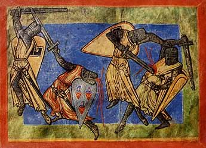
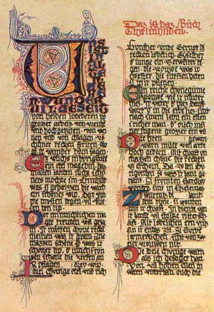
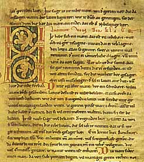
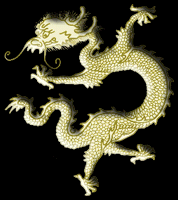
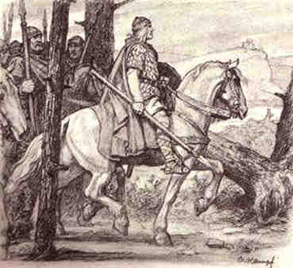
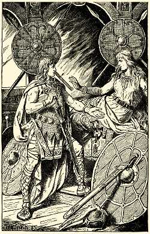
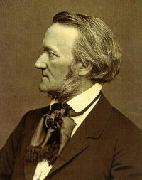
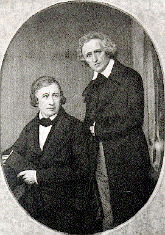
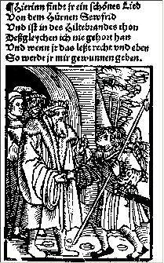
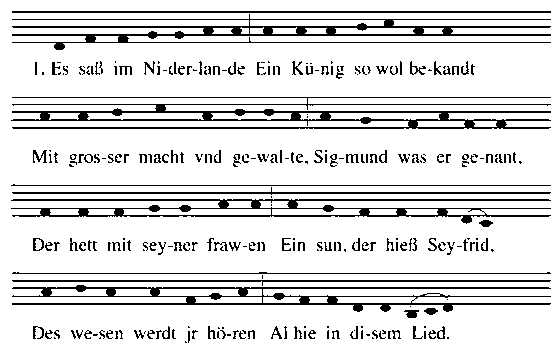
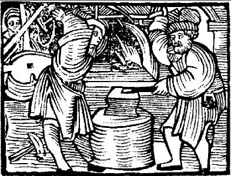
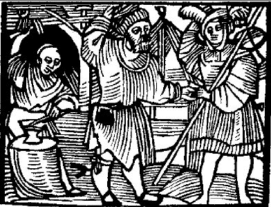
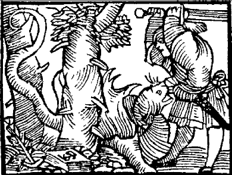
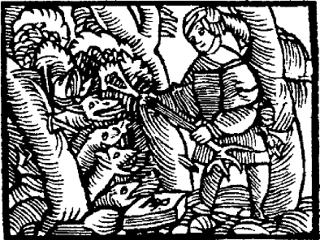
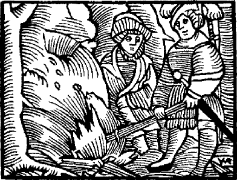
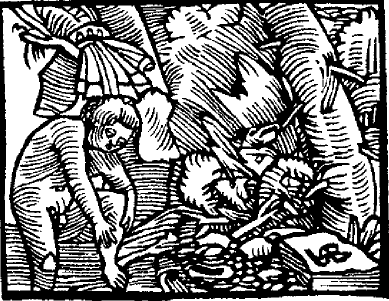
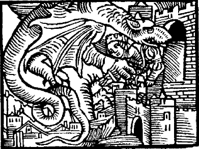
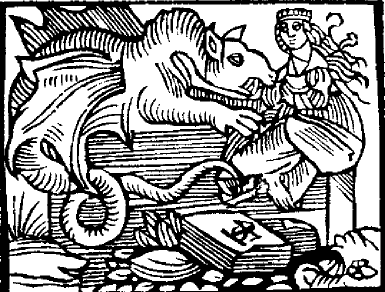
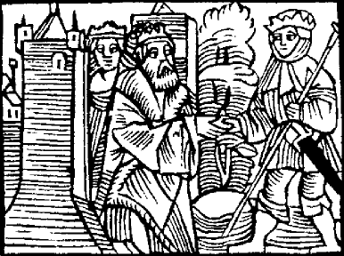
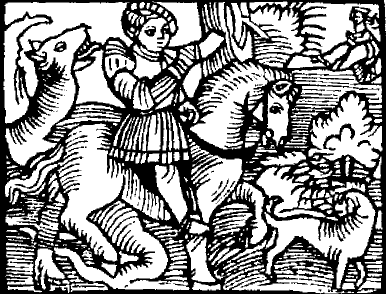
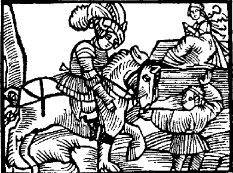
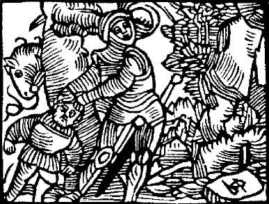
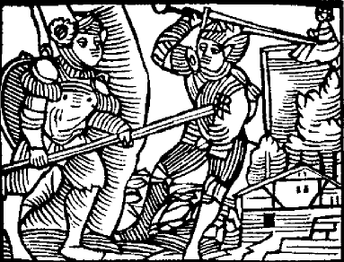
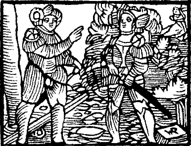
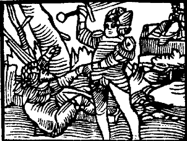
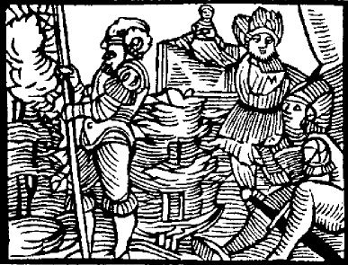
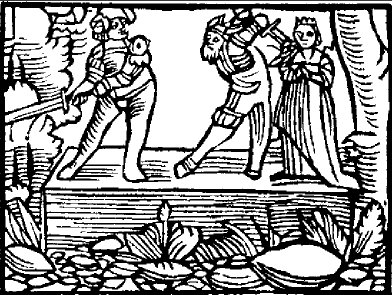
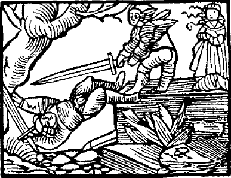
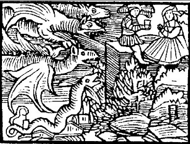
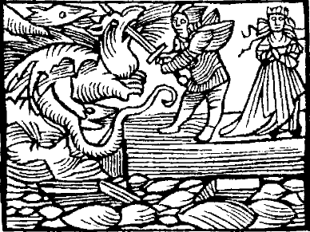
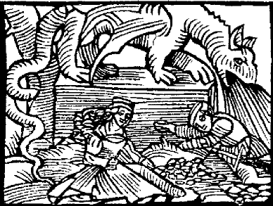
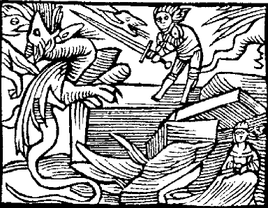
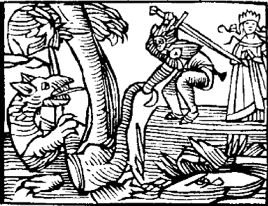
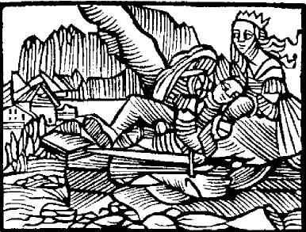
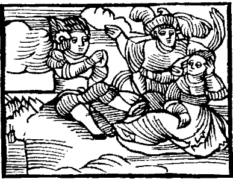
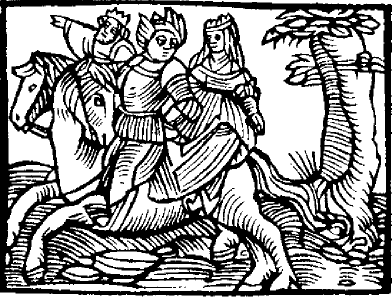
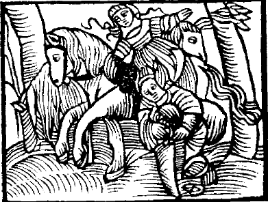
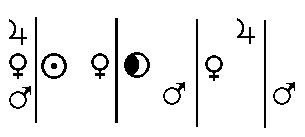
Noms cités
Jean · Chevreul · Valentin · Basile · Artephius · France · Platon · Apollon · Hercule · Aphrodite · Mutus · Louis · Arès · Alain